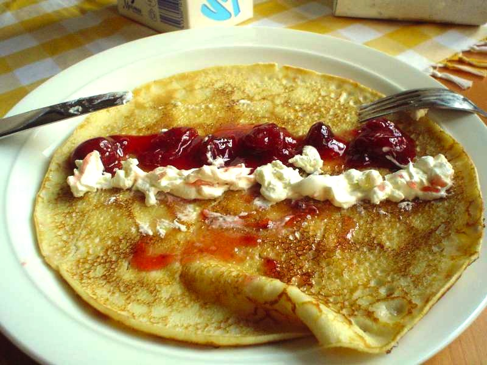

Crepes

Crepe with fillings
Crêpes are very thin pancakes.
They can be served with a wide variety of sweet and savory fillings and toppings.
The breakfast staple dates back to at least 13th-century France.
Ingredients
- Flour
- Eggs
- Milk
- Water
- Salt
- Butter
Steps
- Whisk the milk, water, eggs, and salt.
- Gradually whisk in the flour and butter.
- Scoop the batter onto a hot griddle.
- Cook until lightly browned on the bottom.
- Flip and continue cooking until done on both sides.